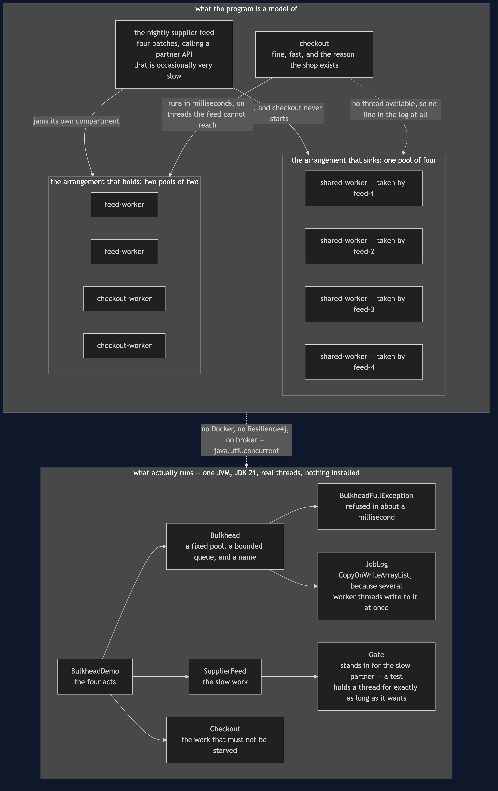

Bulkhead
In plain words: do not let every job in the system draw from the same pot of workers. Give the important work its own set, so that a slow job filling up its own set cannot stop the important work getting a worker.
Everyday analogy: the watertight compartments in a ship's hull — which is literally what a bulkhead is. A hole below the waterline floods one compartment and the ship stays up. The same hole in an undivided hull sinks it. The cost is visible in the analogy too: the walls take up space, and one compartment can be sitting empty while the one next door is full.
In the shop, one thread pool serves everything. The nightly supplier feed calls a partner API that is occasionally very slow, fills the pool, and checkout — which is fine, and fast — cannot get a thread. The shop stops selling because of a background job.
The shared pool sinking
~ 10ms shared feed-2 started on shared-worker
~ 10ms shared feed-4 started on shared-worker
~ 10ms shared feed-3 started on shared-worker
~ 10ms shared feed-1 started on shared-worker
checkout: still waiting for a thread after 300msNotice what is missing from that timeline: checkout. It has no line because it never started. Nothing about it is broken — a test proves it runs correctly the instant a thread frees up. It simply could not get one, and by then the shopper has gone.
The partition holding
~ 0ms feed feed-1 started on feed-worker
~ 0ms feed feed-2 started on feed-worker
~ 0ms checkout checkout started on checkout-worker
~ 0ms checkout checkout finished
checkout: paid ORD-5001
the feed is jammed -- 2 threads busy, 2 jobs queued --
and the shop is still selling, because it never shared.Same slow partner, same four batches, same instant. The feed is just as stuck — a test asserts that, so the isolation is demonstrably the reason and not luck — and checkout completes in milliseconds on threads that were never available to the feed in the first place. Another test puts twenty sales through while the feed sits there.
The pattern is almost nothing
Bulkhead is a fixed thread pool with a bounded queue and a name. There is no clever algorithm here, and that is worth saying out loud: a bulkhead is a decision to stop sharing. The pattern is in having two of them, not in anything either one does.
Two choices inside it do matter.
The queue is bounded. An unbounded queue never refuses anything, which sounds generous and is not: jobs pile up until memory runs out, and callers wait for work that will not start for minutes.
A full bulkhead refuses immediately.
feed is full: no thread and no room in the queue (in 0ms)
4 accepted, 1 refusedThe caller finds out in a millisecond and can do something else — shed the request, degrade, try later. That is the circuit breaker's fast failure, applied to a queue instead of to a broken service.
The honest cost
feed: 2 threads, 2 busy, 2 queued and waiting
checkout: 2 threads, 0 busy, 2 idleRead those two lines together. Two threads are doing nothing while two jobs are waiting for a thread. One shared pool of four would have run all four batches at once and finished the import sooner — and a test asserts exactly that, with the shared pool showing four busy threads and an empty queue.
Partitioned pools are idle capacity by design. Bulkheads buy isolation and pay for it in throughput. The trade is worth making for anything that must never be starved, and it is not worth making for everything — a shop with fifteen bulkheads has fifteen pools to size and a lot of threads doing nothing.
Run it
./gradlew run # four acts
./gradlew test # 12 testsThe tests are the proof, and they do not sleep
This is the only project in the category that uses real threads, so it is the only one that has to be careful about time. It uses two devices instead of sleeping:
- A closed
Gatestands in for the slow partner API. A job waiting at a closed gate holds its thread exactly as a job waiting on a slow network does, and it holds it for precisely as long as the test wants — not a guessed number of milliseconds. AThread.sleep(200)is only long enough until the machine running it is busy, which is how thread tests become flaky. - A short bounded
Future.getwhere a test has to prove something is not happening.oneSharedPoolStarvesCheckoutexpects aTimeoutExceptionafter 250ms; that is the shopper's patience, not a guess about scheduling.
JobLog is a CopyOnWriteArrayList because several worker threads write to it at once. The suite was run repeatedly to check it is not flaky.
One JVM, no infrastructure
No Docker, no Resilience4j, no message broker. java.util.concurrent and a JDK.
Note that this project deliberately has no SimulatedClock: everywhere else in the category time is something the test controls, and here it cannot be, because the subject is threads genuinely waiting for one another.
Technologies and versions
Nothing here is a range and nothing is latest: a course that worked last year and does not work today is worse than one that never took the dependency.
| What | Version | Why it is here |
|---|---|---|
| Java | 21 | The repository standard, requested through the Gradle toolchain block |
| Gradle | 9.2.1 | The wrapper in this directory; no separate install needed |
| JUnit 5 | 5.10.2 | The 12 tests, through junit-bom so the Jupiter artefacts cannot disagree |
That is the entire list, and the short version of it is the point. This project has no runtime dependency at all — the dependencies block in build.gradle names nothing but JUnit, and JUnit is testImplementation. The thread pools are java.util.concurrent.ThreadPoolExecutor, which has been in the JDK since Java 5; there is no Resilience4j, no broker and no container. Every one of the twelve projects in this category is built the same way, so a reader who can run one can run all of them, offline, with a JDK and nothing else.
Where this sits
The circuit breaker refuses to call the broken thing. The bulkhead attacks the same problem from the other end: it makes sure the threads waiting on the broken thing were never the threads checkout needed. In production you want both — a breaker so you stop calling a dead service, and a bulkhead so that the calls still in flight cannot drown anything that matters.
This closes the resilience movement. The next three projects change subject to data: how services own it, and how a page is assembled once they no longer share a database.
Learning Material
| Document | What it covers |
|---|---|
docs/problem-statement.md | A background job nobody was waiting for stops the shop selling, and why a bigger pool is not the answer |
docs/bulkhead-pattern-explained.md | The ship's hull, the four acts, and the part most treatments skip — where the walls take up space |
docs/class-diagram.md | The structure, and the arrow that is missing on purpose between Checkout and SupplierFeed |
docs/architecture-diagram.md | One pool or two, the wall nothing crosses, and why this project uses real threads |
docs/data-flow-diagram.md | One job looking for a thread: run now, wait in a bounded queue, or be refused in a millisecond |
docs/sequence-diagram.md | Both arrangements side by side — the missing checkout line, and the sale that happens anyway |
docs/uml-diagram.md | All four acts as sequences: which thread ran what, and which job never started at all |
docs/animation.html | The four threads being taken one at a time, and checkout arriving to find none left, step by step in a browser |
docs/prerequisites.md | What you need to know, what you explicitly do not, and 60-second primers on thread starvation, bounded queues and the gate |
docs/session.md | A one-hour taught session with exercises |
docs/spec.md | The generated specification, with measured test counts and timings |
docs/youtube.md | Title, description and chapters for the video |
video/README.md | The video pipeline, the scene list, and how to rebuild it |
The pattern in one picture
The class diagram, and the thing to look for is an arrow that was never there: Checkout has no reference to SupplierFeed. They were never related in code. They were related by a resource, which is the kind of coupling that appears in no import statement.

What runs where
The lower half is the literal truth, and unusually for this category most of it really is true: real threads, real waiting. The upper half is the shop, drawn twice — once sharing one pool, once partitioned.

How the data moves
One job looking for a thread, and the only three things that can happen to it. The refusal path is the shortest and the one that makes the pattern useful.

Who calls whom, in order
Both arrangements in one picture. Count the lines in the top half: four batches, four threads, and no checkout line at all.

All four acts
The full set from docs/uml-diagram.md, in the order that document argues them.
One. One shared pool of four. The feed takes every thread and the shop stops selling, with nothing in the log to say so.

Two. Two bulkheads. The feed is just as stuck, and checkout completes in milliseconds on threads the feed could never reach.

Three. A fifth batch, with nowhere to go. No thread and no room in the queue, so the caller is told in about a millisecond and can do something about it.

Four. The bill, on a quiet afternoon. Two threads idle while two jobs wait. Partitioned pools are idle capacity by design.

Video
The narrated walkthrough is built from video/scenes.py by video/build_video.sh. It runs about seventeen minutes across sixteen scenes, and the rendered file is not committed — see the repository README for why — so producing it takes about ten minutes on macOS.
Also available with a framework
Bulkhead with Resilience4j Pattern reruns this idea on a real framework, and shows what the framework adds and where it can undo the pattern. Watch this project first.